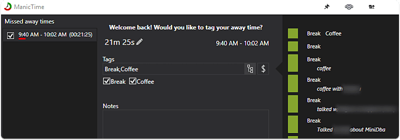
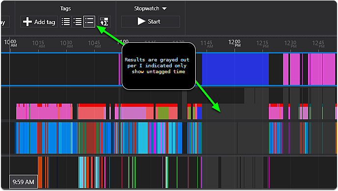

ManicTime - Timetracking Automation Done Right
{{< admonition type="info" title="Updated: 2020-04-29" >}} broken image links removed {{< /admonition >}}
Tracking time is always a beast. With the amount of context switching many developers do, it can be tough to remember how much time went to each project. With companies looking to track effort on sprints, hours on a client project, or (as in my case) just a dev wanting to better evaluate the productive use of time, this app fills some gaps that others don't.For instance, I've tried tools such as Toggl, and similar. I found them useful, but requiring a lot of diligence to work with. There is very little "automatic" categorization of time. Many of those tools are focused on a timer based approach that requires you to start and stop the timer. ManicTime approaches this differently. It has the typical stop watch, countdown, Pomodoro type functionality a time tracking tool might offer, but in addition to this it provides a captured timeline of activity with various forms of meta data to easily review and parse for categorization.
This categorization of information can take the form of details such as:
- Development
- Personal
- Browsing or be specific based on user input such as
- Development, Reticulating Splines
- Personal, Contemplating Navel
- Project Manhattan, Task 666: Optimizing Nuclear Db Performance
Manually entered information is a big driver for better tagging accuracy, but it expands this to allowing dynamic tags based on matching of applications, titles of documents, titles of web pages, calendar entries, and more. This offers a vast range of meta data captured on your system to generate more accurate allocation of your time. The only real negative to this is that it is not as simple as something like Toggle. However, with a little work, you can work an entire day and quickly recap at the end, categorizing your effort with very little fuss, and a high amount of accuracy.
If you find yourself forgetting to hit the stop/start button on your time tracker and want to consider a better option for tracking your effort, then look no farther.
I've used this application over the last year and found a lot of value in it, figured I'd share a little on it, as it's become on of the tools in my essentials pack. Disclaimer: I was provided with a license a while ago on this. This doesn't impact my review, as I just like finding great tools to help devs have a better workflow. I only end up reviewing the ones that I've really found useful
Overview
Time Categories

Overview of Day's Activities
The list of all activities is organized into several timelines, whether it be the applications, extracted document titles from applications, calendar, or even calendar feeds. This allows a variety of ways to go back through and easily organize and track time. One recent improvement that I completely love is the integrated screenshots into the application timeline. This allows you to keep a running screenshot log of activity to easily go back through existing applications and remember exactly what was being done at the time. A very useful implementation!
Tracking Exclusion
Note that you can choose to go off record, as well as specifically only track certain times of day. This is a good option for those that have a work laptop that they might leave running and only want to report on certain periods of active work time.
Autotagging
Autotagging is where this tool gets powerful. Basically, the concept is to allow automatically tagging based on application, window title, url, or other parsed value. This means you can categorize your effort much more easily, with minimal effort.
Regex Parsing
I've yet to figure out the dynamic tags based on regex parsing as it doesn't seem to give you a preview to test and refine results. Once I figure this out, or the app improves the ability to use this I think the additional timelines will be very handy as you could have one timeline focused on dynamic parsing and grouping of projects based on doc/chrome titles that doesn't interfer with the categorization that the other timeline might use. This is a usability issue that I hope to see improved in the future. It has a lot of potential.

Multiple Autotag Timelines
This is someone I've recently been exploring as it provides the capability to create an automatic tagging of apps, but for different purposes. For instance, you might setup one rule for parsing project numbers and send to a AutoProject timeline that aggregates the totals, but another timeline for categorization of the apps/websites. Another use might be a timeline focused on categorizing web usage, while another focuses on app usage.

Tagging
Away Time Tagging
You can have ManicTime prompt you when you return from your computer, or when a timer has detected minutes of idle on your system. This can help ensure that if you are gone to a meeting, or away from your PC you are still tracking the time you used.

Narrow down untagged time quickly
There is a variety of ways to filter down the timeline to only untagged activities as the selected, or untagged as what's actually shown. This can help identify gaps in what you've reviewed.

Statistics & Reports
Generate Timesheet Report

Some Nice Visual Statistics Available
Other Statistics Available
These are listed based on the selected groups, tags and more.

Manic Time Server
Manic time offers server functionality to allow this tool to be used to help generate reports for staff members and usage. This functionality is not for the non-technical user. I found it a little challenging to get things setup, so this current iteration wasn't designed as a simple "central" solution for all devices. With a better setup/configuration experience (no domain user logins etc) and perhaps more of a Google Drive/Dropbox type sync, I think the solution would be fantastic for tracking time on various devices. Due to the setup issues I had on server, I wasn't able to include tracking from the new ManicTime android client. I would say that homegrowing your own tracking solution with Tasker and a custom timeline here might not be a difficult project to consume through the app due to the documented format for consuming external timeline information. I haven't gone to that effort, but it's an intriguing concept.
daily retrospective
Being able to retroactively tag and categorize effort at the end of the day, without having to constantly toggle the stopwatch. You can approach with a stop watch/pomodoro/countdown built in, but if you get pulled in multiple tangents, this tool makes it easy to go back and categorize throughout the day... IF your primary work is driven on using your computer. Since I'm approaching this from a developer tool point of view, it's a perfect fit!
Last Thoughts
Fantastic app with a unique approach. Cost is a little high, but it's an independent app so supporting the development can be a good thing as a really specialized tool. Not sure they'd be able to continue development if it was a lifetime purchase (those seem to have gone away over time). As a good office tool for better tracking and reporting on time (for instance if working with clients), then I believe it might just pay for itself. I'd like to see a smoother integration with the server components to being a better cloud tracking mechanism, allowing android, pc, mac, all to provide a solid reporting mechanism for families on the go. The app seems more focused on enterprise/business tracking though, so this might not be implemented. I'll continue using and finding great value in helping track my time with the least amount of work. For those looking for a solution, give it a shot. They have a lite version available as well with less features, so you can take a swing at it.